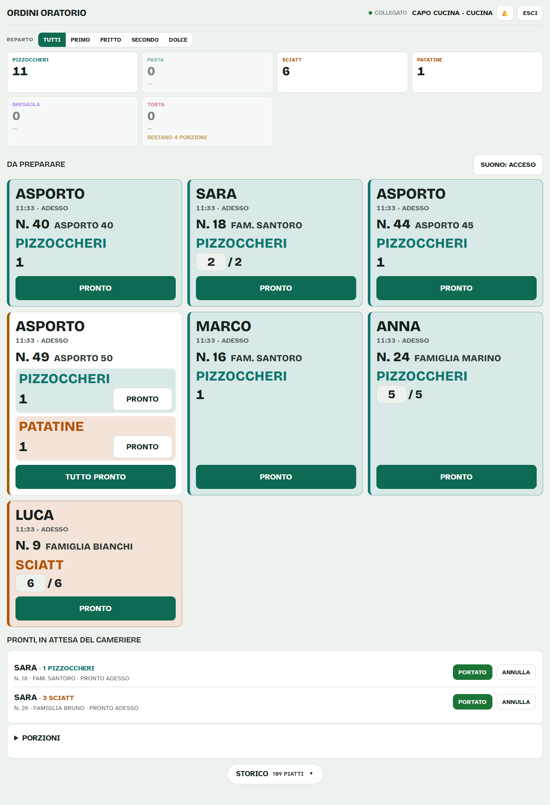
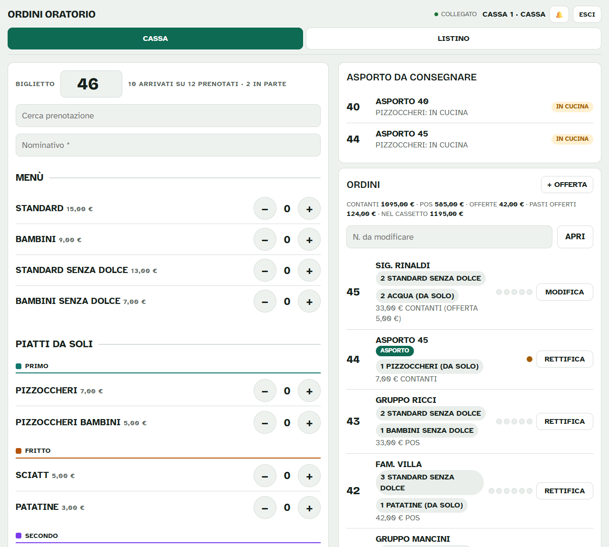
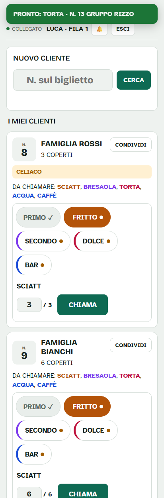
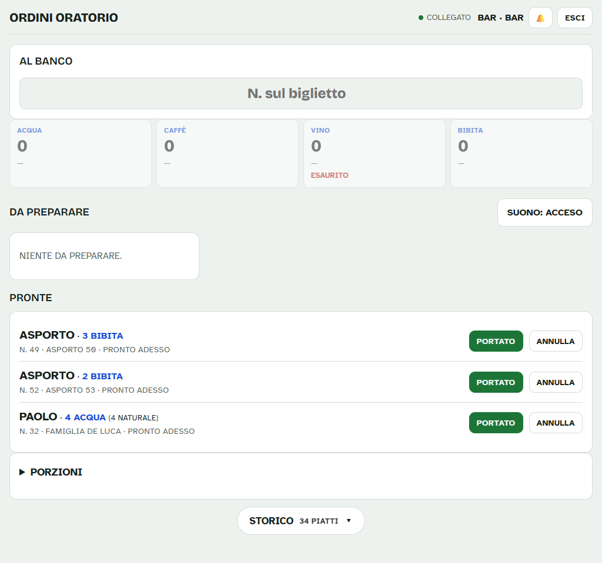
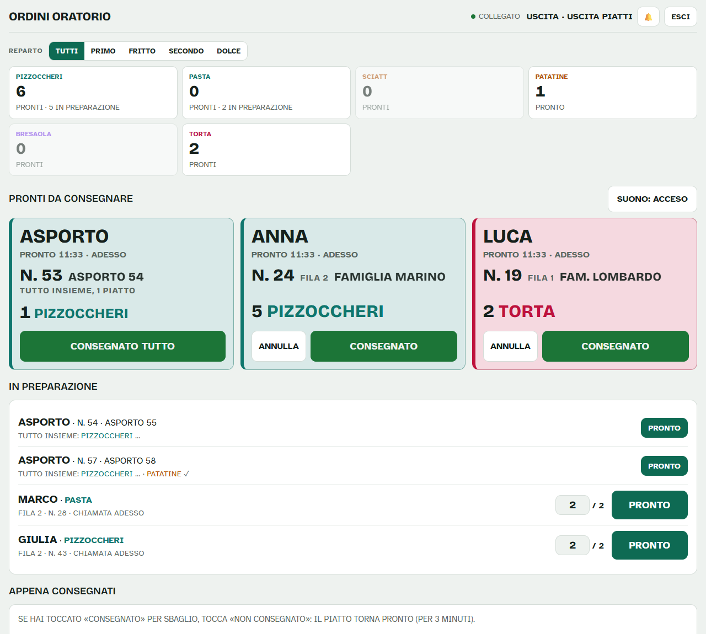
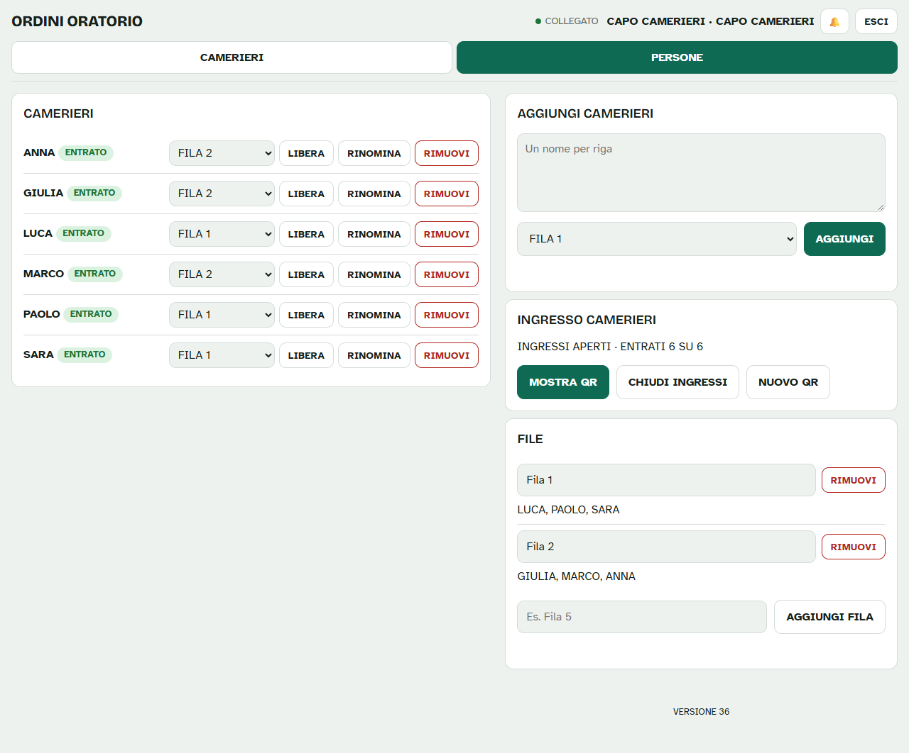
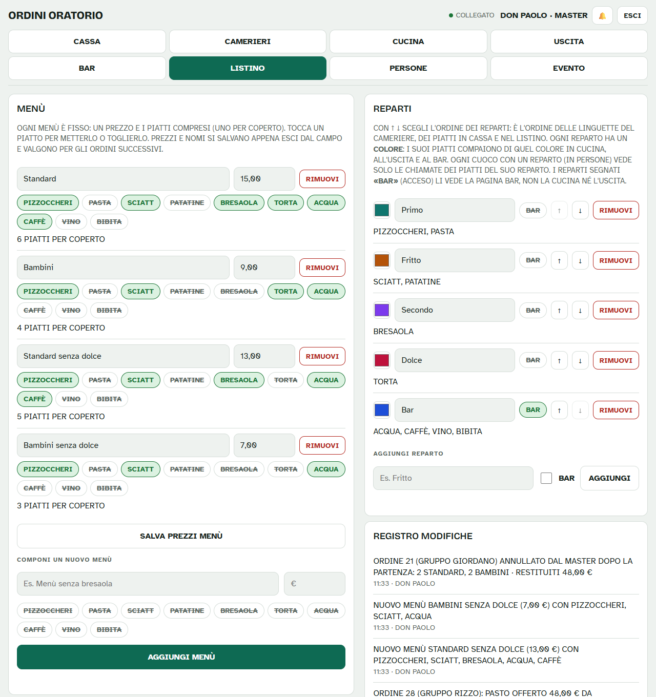
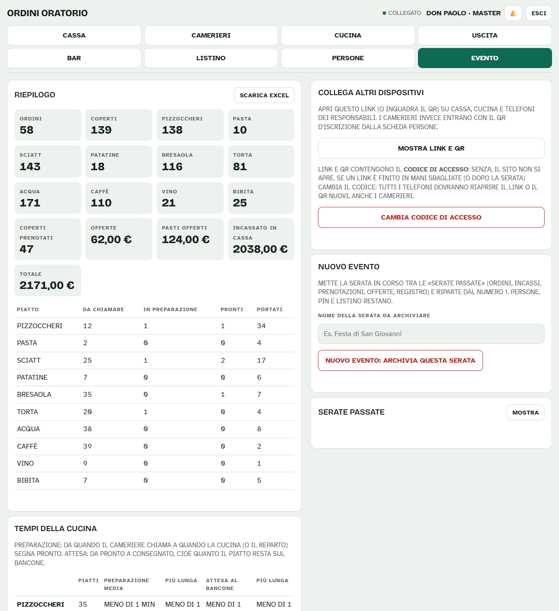

Come si usano cassa, camerieri, cucina, bar e uscita piatti durante la serata.

Serata
21 novembre 2026
App
giovanichef.web.app
Versione
39
Indice
Questo manuale spiega, pagina per pagina, come si usa l'app degli ordini durante la serata. Le immagini vengono da una serata di prova con nomi e ordini inventati.
Come si entra tutti
Cassa cassieri
Camerieri camerieri
Cucina cuochi
Bar bar
Uscita piatti bancone
Capo camerieri capo camerieri
Master: listino ed evento responsabile
Se qualcosa va storto tutti
Chi
Pagina
Dispositivo
Cassieri
Cassa
PC o tablet
Camerieri
Camerieri
Il proprio telefono
Cuochi
Cucina (tutta o un solo reparto)
Tablet o PC in cucina
Bar
Bar
Tablet o telefono
Chi controlla il bancone
Uscita piatti
Tablet o PC
Capo camerieri
Persone e Camerieri
Telefono o tablet
Responsabile della serata
Master: tutte le pagine
PC
1
Come si entra
Tutti
Ogni telefono entra una volta sola con il link o il QR del responsabile; poi l'app si ricorda di lui.
Apri il link (o inquadra il QR) che ti manda il master. Senza link compare «Telefono non autorizzato».
Alla schermata «Chi sei?» tocca il tuo nome, scrivi il PIN e tocca Entra.
Camerieri: niente PIN. Inquadra il QR d'iscrizione del capo camerieri (oppure scrivi il codice sotto il QR in «Sei un cameriere?») e tocca il tuo nome.
In alto ci sono le schede delle pagine che puoi usare. Chi ha più ruoli (per esempio Cassa e Master) passa da una all'altra toccando la scheda. In alto a destra vedi se sei collegato, il tuo nome e il tasto Esci.
Da sapere. Cucina, camerieri, bar e uscita tengono lo schermo sempre acceso mentre la pagina è aperta. Tutte le pagine si aggiornano da sole: non serve ricaricare. Se compare «Suono bloccato dal telefono», toccalo una volta per attivare gli avvisi.
2
Cassa
Cassieri
La cassa crea gli ordini e incassa: il numero dell'ordine è quello del biglietto che dai al cliente.

A sinistra il nuovo ordine, a destra gli ultimi ordini con Modifica e Rettifica.
Nuovo ordine
Biglietto: controlla il numero. Se il cliente ha prenotato, scrivi il nome nel campo del nominativo e scegli la prenotazione: il menù si compila da solo.
Nominativo: obbligatorio (qui si cerca anche la prenotazione).
Menù: sono tasti grandi: un tocco = uno in più. Per toglierne uno usa − nello scontrino a destra.
Cambi nel menù: «Aggiungi il cambio» se qualcuno vuole un piatto al posto di un altro, oppure «Niente» per toglierlo. Con «Scala» il piatto tolto si sconta dal prezzo.
Piatti da soli: bevande ed extra fuori dal menù, tasti grandi divisi per reparto (un tocco = uno in più).
Note per la cucina: allergie e intolleranze, con + Note cucina.
Da asporto: tocca + Asporto, spunta «Da asporto» e scegli se la cucina lo prepara «Subito» o se «Lo chiama un cameriere».
Pagamento: Contanti (scrivi il «Ricevuto» e l'app calcola il resto), POS oppure Offerto (scrivi da chi). + Dividi conto per pagare in più parti; + Offerta per un'offerta in più (nello scontrino).
Tocca Crea ordine.
2
Cassa
Ordini già fatti
A destra gli ultimi 15 ordini con lo stato dei piatti. Per un altro ordine scrivi il numero in «N. da modificare» e tocca Apri.
Modifica: finché nessun cameriere ha preso l'ordine puoi cambiare tutto. L'app ti dice se «Incassare altri» soldi o «Restituire».
Rettifica: quando un cameriere l'ha già preso puoi togliere solo i piatti non ancora chiamati, con il rimborso calcolato.
Annulla ordine: chiede conferma. Il numero non viene più riusato.
+ Offerta: registra un'offerta senza ordine (contanti o POS).
Asporto da consegnare: quando è pronto, consegnalo e tocca Consegnato.
In alto vedi l'incasso della tua cassa e il fondo cassa. Storico, in fondo: gli ordini più vecchi.
Porzioni finite. Quando un piatto è esaurito il tasto dice «esaurito» (o «ne restano 2») e la cassa non lascia vendere oltre le porzioni rimaste.
3
Camerieri
Camerieri
Il cameriere prende i clienti dal numero del biglietto, chiama i piatti quando è il momento e li porta al tavolo.

I clienti del cameriere, con le linguette dei reparti.
Prendere un cliente
In «Nuovo cliente» scrivi il numero sul biglietto e tocca Cerca.
Controlla nome e piatti e tocca Aggiungi: il cliente passa in «I miei clienti».
Chiamare i piatti
Ogni cliente ha le linguette dei reparti (Primo, Fritto, Secondo, Dolce, Bar). Il pallino indica che c'è ancora qualcosa da chiamare.
Chiama manda il piatto in cucina. Chiama tutto chiama insieme tutti i piatti del reparto.
Solo una parte adesso? Abbassa il numero (per esempio 2 su 3) prima di chiamare: il resto resta da chiamare dopo.
Scelte (per esempio acqua Naturale o Frizzante): decidile prima di chiamare.
Chiamato per sbaglio? Annulla, finché non è ancora pronto.
Portare i piatti
Quando il piatto arriva sul bancone l'uscita lo segna pronto e il telefono suona.
Tocca Porta… quando lo porti al tavolo: diventa «portato ✓». Per sbaglio? Non portato.
Un piatto in ritardo ha il bordo rosso a sinistra.
Altro
Condividi / Sposta: servi il cliente insieme a un collega, o passalo a lui.
Storico, in fondo: i clienti già finiti.
4
Cucina
Cuochi
La cucina vede le chiamate dei camerieri e prepara. Non tocca niente: il «Pronto» lo segna l'uscita quando il piatto arriva sul bancone. Un cuoco con un reparto vede solo i piatti del suo reparto.
In alto il riepilogo delle porzioni da fare, poi le schede da preparare e i piatti pronti.
La schermata
Riepilogo: quante porzioni di ogni piatto ci sono da fare in tutto. Il filtro «Reparto» mostra Tutti o uno solo.
Da preparare: una scheda per ordine, colorata come il reparto. In grande il nome del cameriere; sotto l'ora della chiamata con i minuti passati, il numero dell'ordine e il cliente; poi il piatto con la quantità.
Le scelte (per esempio Naturale / Frizzante) sono su righe separate. Un piatto in ritardo ha il bordo rosso.
Quando il piatto è fatto
Metti il piatto sul bancone: la scheda sparisce quando l'uscita lo segna pronto (anche solo una parte: il resto resta da preparare).
Pronti, in attesa del cameriere: solo da guardare, per sapere cosa aspetta sul bancone.
Suono per sentire le chiamate, Porzioni per vedere e correggere quelle rimaste, Storico in fondo.
5
Bar
Bar
Il bar prepara le bevande e gli extra del bar (acqua, caffè, vino…) chiamati dai camerieri. A differenza della cucina, il «Pronto» lo segna il bar stesso.

In alto «Al banco» e il riepilogo, poi le bevande da preparare e quelle pronte.
Al banco: se il cliente viene al bancone, scrivi il numero del biglietto. L'app mostra cosa dargli: consegna e tocca Dato.
Da preparare: le chiamate, una scheda per ordine. Pronto su una bevanda, anche in parte abbassando il numero.
Pronte: quello che aspetta il cameriere. Portato se la porta il bar, Annulla se era sbagliata.
Suono, Porzioni (per esempio i vini) e Storico come in cucina.
6
Uscita piatti
Bancone
L'uscita controlla il bancone: segna «Pronto» i piatti che arrivano dalla cucina, vede i piatti pronti fila per fila e aiuta i camerieri a non dimenticarli.

I piatti pronti sul bancone, con cameriere, numero, fila e cliente.
In alto puoi scegliere il reparto da guardare (Tutti o uno solo) e vedere quanti piatti sono pronti e in preparazione.
Pronti da consegnare: se il cameriere se ne dimentica e il piatto lo porta qualcun altro, tocca Consegnato.
Annulla (due tocchi, «Non pronto?»): il piatto torna da preparare in cucina.
In preparazione: cosa sta facendo la cucina. Quando il piatto arriva sul bancone tocca Pronto: il cameriere lo vede pronto e il telefono suona.
Pronti in parte: abbassa il numero (per esempio 3 su 5) e tocca «Pronti 3». Il resto resta da preparare. Con le scelte (Naturale / Frizzante) ogni scelta ha il suo numero.
Ordini uniti («n. 12 + 13»): lo stesso piatto è una riga sola, sommato. Anche qui puoi segnarne pronta solo una parte: prima va l'ordine col numero più basso.
Appena consegnati: toccato «Consegnato» per sbaglio? Non consegnato entro 3 minuti e il piatto torna pronto.
7
Capo camerieri
Pagina Persone
Il capo camerieri fa entrare i camerieri, li divide nelle file e sistema i clienti se qualcuno cambia.

Elenco dei camerieri, ingresso con il QR e file.
Aggiungi camerieri: un nome per riga, scegli la fila e tocca Aggiungi.
Ingresso camerieri:Mostra QR e fallo inquadrare. Quando sono entrati tutti tocca Chiudi ingressi («Riapri» per riaprirli). Nuovo QR crea un QR nuovo: quello vecchio non funziona più.
Camerieri: chi è «entrato», la sua fila, Libera per scollegare il suo telefono (rientra con il QR), Rinomina, Rimuovi.
File: aggiungi o togli le file; sotto ogni fila vedi i suoi camerieri.
Clienti: dalla pagina Camerieri, «Sposta» passa un cliente a un altro cameriere e «Condividi» lo fa servire a due.
8
Master: listino ed evento
Responsabile
Il master prepara la serata, vede tutte le pagine e a fine serata chiude la cassa.

Listino: menù, piatti, reparti e registro delle modifiche.
Persone
Aggiungi persona: nome, uno o più ruoli (Cassa, Cucina, Bar, Uscita piatti, Capo camerieri, Master, Cameriere) e PIN. A un cuoco puoi dare un reparto: vedrà solo quello.
Listino
Menù: prezzo e piatti compresi (tocca un piatto per metterlo o toglierlo). «Aggiungi menù» per uno nuovo.
Piatti: reparto, prezzo da solo (vuoto = non si vende da solo), «Pronto entro» in minuti, scelte del cameriere (per esempio Naturale / Frizzante).
Reparti: ordine (↑ ↓) e colore; quelli segnati «Bar» vanno alla pagina Bar.
I prezzi nuovi valgono solo per gli ordini fatti dopo. Ogni modifica finisce nel «Registro modifiche».
8
Master: evento
Responsabile

Evento: riepilogo della serata, collegamenti e nuovo evento.
Riepilogo: ordini, coperti, piatti, incassi e offerte; Scarica Excel.
Tempi della cucina: quanto ci mettono i piatti a essere pronti e a lasciare il bancone.
Chiusura cassa: a fine serata conta i contanti di ogni cassa e scrivili in «Contati»: l'app dice se tornano.
Prenotazioni: importa l'Excel (o scarica il modello). Si può ricaricare aggiornato senza doppioni.
Collega altri dispositivi: link e QR per cassa, cucina e responsabili. Cambia codice di accesso blocca tutti i link vecchi.
Nuovo evento: archivia la serata e riparte dal numero 1 (persone, PIN e listino restano). Va fatto prima della serata.
Serate passate: le serate archiviate.
9
Se qualcosa va storto
Tutti
Quasi tutto si può annullare: niente panico, guarda qui.
Cosa succede
Cosa fare
In alto compare «Senza rete: salvo appena torna»
Continua pure: quello che fai parte appena torna la rete. Non chiudere l'app.
La pagina sembra ferma o strana
Ricarica la pagina: riparte da dove eri.
«Telefono non autorizzato»
Riapri il link o il QR del master (forse il codice è stato cambiato).
Un cameriere non riesce a entrare
Il capo camerieri controlla che gli ingressi siano aperti e mostra il QR attuale.
Non si sentono gli avvisi
Tocca «Suono bloccato dal telefono» o accendi «Suono».